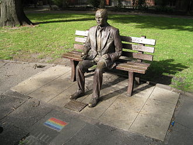

La première véritable biographie qui lui est consacrée sous forme d'un livre, Alan Turing : the enigma d'Andrew Hodges, n'apparaît qu'en 1983. Elle a été auparavant précédée de biographies plus confidentielles, comme celle de sa mère et celle de Brian Randell ou d'ouvrages reconnaissant son rôle de pionnier.
Dans les années 2000, on aime à trouver en Grande-Bretagne un précurseur local de l'informatique plus récent que Charles Babbage ou Ada Lovelace, tandis que l'effort du mouvement LGBT parvient à faire annuler les lois et dans une certaine mesure lever les préjugés sur l'homosexualité. Le secret des opérations de la guerre est levé après 50 ans. Des plaques commémoratives, statues, timbres à son effigie honorent la mémoire d'Alan Turing, principalement en raison de son rôle dans la cryptanalyse.
Amnistie
En 2009, une pétition, émise à l'initiative de l'informaticien John Graham-Cumming, est envoyée au Premier ministre Gordon Brown : « Nous soussignés demandons au Premier ministre de s'excuser pour les poursuites engagées contre Alan Turing qui ont abouti à sa mort prématurée. » En septembre 2009, celui-ci a présenté des regrets au nom du gouvernement britannique. Cependant, le ministre de la Justice Tom McNally exprime en février 2012 son refus de revenir sur la condamnation. Celle-ci, bien que paraissant aujourd'hui « cruelle et absurde », a été rendue en fonction des lois de son temps. « Une réhabilitation posthume n'a pas été jugée appropriée car Alan Turing a été justement reconnu coupable de ce qui était, à l'époque, une infraction pénale. » En décembre 2012, un groupe de onze scientifiques britanniques, dont le physicien Stephen Hawking, appelle le Gouvernement britannique à annuler sa condamnation, à titre posthume.
Le 24 décembre 2013, la reine Élisabeth II signe un acte royal de clémence, sur proposition du secrétaire d'État à la Justice Chris Grayling qui déclare que c'était une condamnation « que nous considérerions aujourd'hui comme injuste et discriminatoire ». C'est la quatrième fois depuis 1945 que la prérogative royale de grâce s'exerce.
La réflexion sur le cas de Turing est à l'origine de la promulgation de la loi Alan Turing au Royaume-Uni, partie de la révision de la loi pénale Policing and Crime Act 2017 .
Hommages
Depuis 1966, l’Association for Computing Machinery décerne annuellement le prix Turing (« Turing Award ») à des personnes ayant apporté une « contribution majeure d'importance durable » au domaine de la recherche informatique. Cette récompense est souvent considérée comme l'équivalent du prix Nobel pour l'informatique. Le récipiendaire est invité à donner une conférence que l'on appelle la conférence du prix Turing (« Turing Award lecture »).
La British Computer Society et l'Institution of Engineering and Technology ont appelé Turing Lecture la leçon publique qu'ils demandent à une personnalité de renom, dans divers lieux prestigieux de Grande-Bretagne.
En février 2011, au terme d'une vente aux enchères, des documents rédigés par Turing durant la Seconde Guerre mondiale sont acquis par le musée de Bletchley Park avec l'aide du National Heritage Memorial Fund afin d'éviter leur départ à l'étranger.
Plusieurs villes ont décidé de nommer une rue, une place, un parvis, une allée ou un équipement public en son honneur, par exemple Manchester et Guildford au Royaume-Uni. Pour la France, on en trouve à Clermont-Ferrand, Paris (avec le parvis Alan-Turing, voté fin 2016; la Station F, incubateur dédié aux technologies numériques, se situe officiellement à l'adresse No 5, parvis Alan-Turing, Paris 13e), Saint-Fargeau-Ponthierry, Aubière et Anzin. De nombreuses universités ou départements d'informatique ont un amphithéâtre ou une salle Turing.
Le 15 juillet 2019, Alan Turing est désigné par la Banque d'Angleterre pour figurer sur les prochains billets de banque anglais de 50 £ valables dès 2022. Il est ainsi la première personnalité de la communauté LGBT à figurer sur un papier-monnaie. Le futur billet affichera de nombreux éléments évoquant sa carrière, notamment une ligne en code binaire. Celle-ci, convertie en valeurs décimales, donne 23061912, c'est-à-dire un codage de la date de naissance de Turing, à savoir le 23 juin 1912.
Salvatore Adamo lui rend hommage dans sa chanson de 2012 Alan et la pomme.
Œuvres de fiction
La vie d'Alan Turing a inspiré de nombreuses œuvres de fiction.
Littérature
- 1995 : Robert Harris, Enigma, Pocket, 1997. Thriller inspiré de la biographie du mathématicien.
- 2007 : Jean Teulé, Le Magasin des suicides. Le nom du personnage principal est issu d'Alan Turing.
- 2009 : David Lagercrantz, Indécence manifeste, Actes Sud, 2016. Roman sur la vie de Turing.
- 2010 : Janna Levin, Un fou rêve de machines de Turing, Markus Haller, 2010. Portrait croisé de Kurt Gödel et d'Alan Turing.
- 2015 : Laurent Alexandre et David Angevin, L'Homme qui en savait trop. Roman de science-fiction sur la vie de Turing, Robert Laffont.
- 2019 : Jacques Marchand, La joie discrète d'Alan Turing, Québec Amérique, Montréal, roman de 432 pages sur la vie de Turing.
- 2019 : Ian McEwan, Une machine comme moi (Machines like me), Gallimard. Ce roman décrit un monde qui ressemble au nôtre. En 1982, Alan Turing est encore en vie et grâce à lui, les prouesses technologiques sont inouïes et les avancées en matière d'intelligence artificielle fulgurantes.
Théâtre
- 1986 : Hugh Whitemore, Breaking the Code (en), adaptation de la biographie de Andrew Hodges. La pièce est montée à Londres, puis à Broadway76. Adapté pour la télévision en 1996, réalisé par Herbert Wise.
- 1999 Jean-François Peyret, Turing-Machine, spectacle conçu et mis en scène par Jean-François Peyret, à la Maison de la culture de Bobigny, avril 1999.
- 2018 : La Machine de Turing, de Benoit Solès, au théâtre Michel à Paris, puis au Théâtre du Palais-Royal à Paris.
Cinéma
- 2011 : The Turing Enigma, film britannique réalisé par Pete Wild
- 2014 : Imitation Game (The Imitation Game), film américano-britannique réalisé par Morten Tyldum, adaptation de la biographie d'Andrew Hodges, avec Benedict Cumberbatch dans le rôle de Turing
- 2016 : L'enigma di Turing, film italien réalisé par Orfeo Orlando
Bande dessinée
Éric Liberge et Arnaud Delalande, Le cas Alan Turing : histoire extraordinaire et tragique d'un génie, Les arènes BD, 2015
Un manuscrit de 1942 vendu aux enchères
Le lancement de plusieurs documentaires et films de fiction ayant attiré l'attention sur la personnalité de Turing, un cahier de 56 pages contenant un manuscrit de Turing datant de 1942 a été vendu chez Bonhams, à New York, le 13 avril 2015, pour plus d'un million de dollars. Il comprend des réflexions sur la notation de Leibniz. Turing avait légué ses papiers au mathématicien Robin Gandy, un ami proche, qui a utilisé le cahier pour un journal intime sur des pages non utilisées, et l'a pour cette raison retiré des papiers de Turing qu'il a confiés au King's College à Cambridge. Il est presque certain qu'il est, actuellement, le seul manuscrit autographe de quelque importance de Turing en circulation.